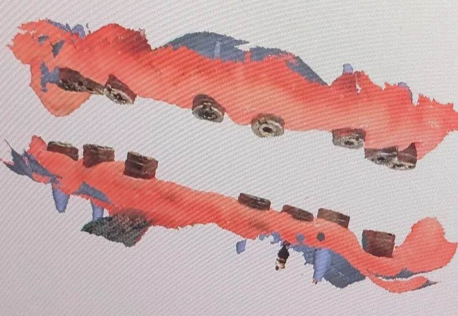

نسخه استخراجشده؛ ترجمه یا تأیید علمی انجام نشده است. وضعیت: captured
بیمار کاملاً بیدندان است و برای درمان فولآرچ دیجیتال روی ایمپلنت، هر دو فک و رابطهی آنها را اسکن کردهای. آیا VD که سر اسکن ثبت شد، قطعی است؟

در درمانهای فولآرچ دیجیتال، VD بهدستآمده در مرحلهی اسکن قطعی در نظر گرفته نمیشود. یک تخمین است؛ یک نقطهی شروع منطقی که قرار است بعداً با یک واسطهی فیزیکی تأیید یا اصلاح شود. کل منطق کار روی همین بنا شده است؛ اگر آن را قطعی بگیری، خطای مرحلهی اول بدون هیچ ایستگاه بازبینی تا رستوریشن نهایی منتقل میشود.
استثنا زیاد است: در نواحی خلفی همین بیمار، دندانها خیلی وقت پیش کشیده شدهاند، تحلیل استخوان بیشتر رخ داده و توازی بههم میخورد، در حالی که در قدام مشکلی نیست. این نشانه فقط کمک میکند خطای فاحش نکنی، نه اینکه بگوید به VD درست رسیدهای.
دیتای نهایی دیگر آن اسکن تخمینی اول نیست؛ اسکن یک رستوریشن موقتی و واسطهای است که در دهان چک و تصحیح شده. ریشهی همهی این تکنیکها یکی است: به اسکن خام فولآرچ بهتنهایی اعتماد نکن و تأیید نهایی را به یک مرجع فیزیکی بسپار.